Fakten & Daten
Das Projekt
Die denk-mal EISWERDER13 gGmbH betreibt das denkmalgeschützte Haus auf der Insel Eiswerder als gemeinnütziges Arbeits- und Lebensprojekt in Eigenregie – hier die Fakten dazu.
- 1893/94erbaut
- 1.246 m²Nutzfläche
- 2.735 m²Grundstück
- 99 JahreErbbaurecht · Stiftung trias
- 2010Projektbeginn
Insel Eiswerder, Hakenfelde
Das Grundstück liegt auf der Insel Eiswerder, die über zwei Straßenbrücken mit dem Festland verbunden ist: die Große Eiswerderbrücke im Westen und die Kleine Eiswerderbrücke im Osten. 2009 entstand westlich des Grundstücks eine öffentliche Parkanlage bis zum Spandauer See.
- Adresse
- Eiswerderstr. 13–13a, 13585 Berlin-Spandau, Ortsteil Hakenfelde
- Fern- & Regionalbahn
- Bahnhof Spandau (RE2, RE4, RE6, RB10, RB13, RB14)
- S- und U-Bahn
- S+U Rathaus Spandau: S3 + S9 (10-Minuten-Takt), U7 (5-Minuten-Takt)
- Bus
- ab Rathaus Spandau ca. alle 5 Minuten: M36 oder 136, 3 Zwischenhalte, ca. 5 Minuten bis Haltestelle Eiswerderstraße
- Zu Fuß ab Bus
- ca. 10 Minuten (ca. 590 m) über die Große Eiswerderbrücke, gleich hinter dem Park links
- Zu Fuß ab Bahnhof
- ca. 25–35 Minuten – durch die Altstadt Spandau oder fast durchgängig an der Havel entlang (Sternbergpromenade, Möllentordamm, Mühlengraben, Wröhmännerpark, Frieda-Arnheim-Promenade)
- Bebauungsplan
- 2.735 m² Grundstück im Mischgebiet M1b (B-Plan VIII-533b); Wohngebäude nur ausnahmsweise zugelassen. Südöstlich Gewerbegebiet (B-Plan VIII-533a); seit 2022 entstehen mehrgeschossige Neubauten auf Eiswerderstr. 10–12.
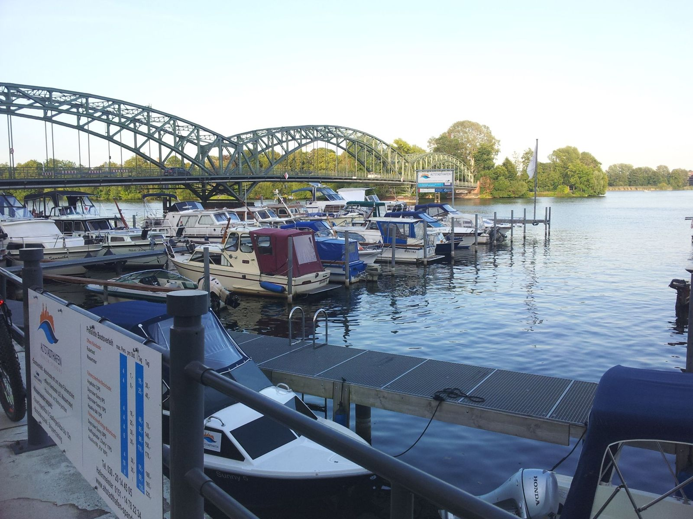
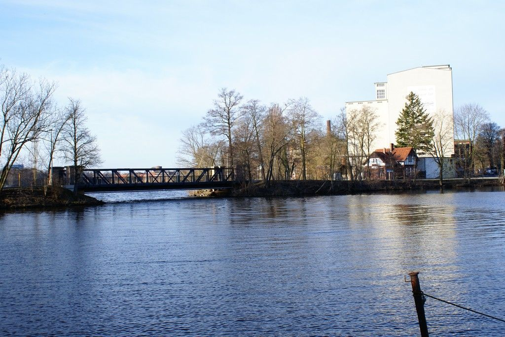
Gemeinnützig im Erbbaurecht
Erbbaurechtsgeberin ist die Stiftung trias – eine gemeinnützige Stiftung für Boden, Ökologie und Wohnen – mit einem Erbbaurechtsvertrag über 99 Jahre. Ermöglicht wurde dies über eine Zustiftung an die trias und Darlehen der Projektbegründer:innen.
- Projekt-Gründerin
- „Eiswerder13 GbR“ – Erbbaurechtsnehmerin, bis die Rechte an die denk-mal EISWERDER13 gGmbH übergingen
- Trägerin
- denk-mal EISWERDER13 gGmbH (umfirmiert aus der vormaligen „Alte Schule-EISWERDER13 GmbH“) – Verwalterin des Erbbaurechts
- Nutzer:innen
- überwiegend Gesellschafter:innen der gemeinnützigen Gesellschaft
- Zweck
- Förderung von Denkmalschutz und Denkmalpflege, Naturschutz und Landschaftspflege sowie Umweltschutz inklusive Klimaschutz
Verwirklicht wird das durch die Erhaltung und Sanierung des kontaminierten Grundstücks mit seinen drei Naturdenkmälern und dem denkmalgeschützten Gebäude – in Abstimmung mit den Fachbehörden und den Vorgaben der Stiftung trias – sowie durch Ausstellungen, Führungen, Veranstaltungen und Veröffentlichungen für eine größere Öffentlichkeit.
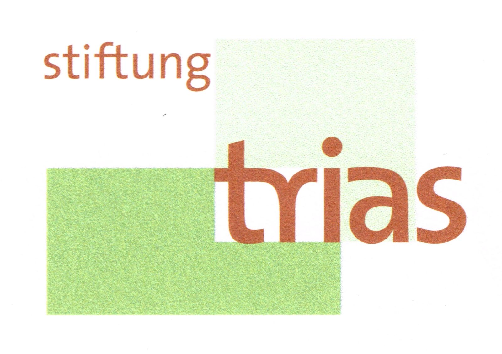
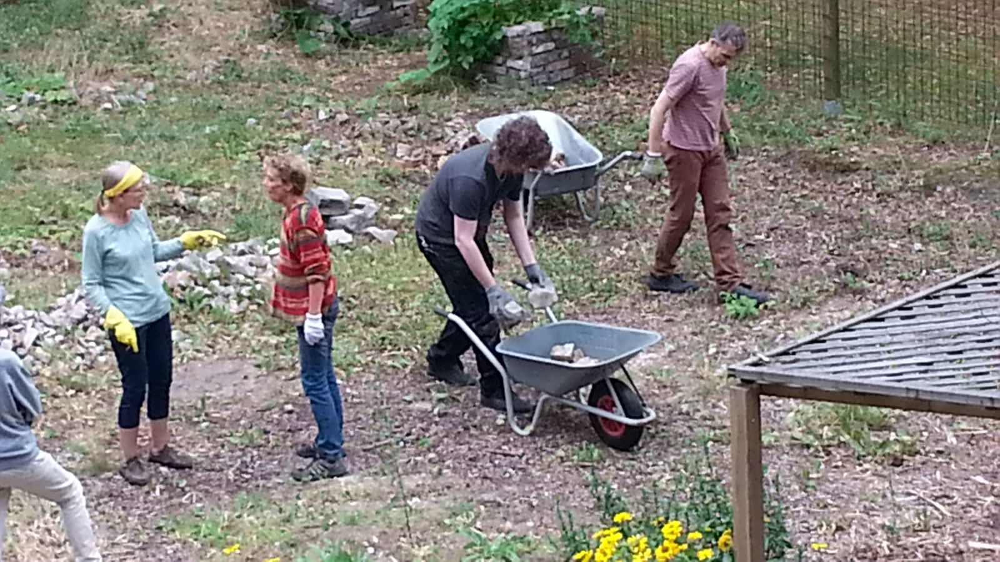
Solide & gemeingetragen
- Einlage / Kaution
- 30,00 € pro m² Nutzfläche von den Nutzer:innen bzw. Mieter:innen
- Nutzungsentgelt
- monatlich, entsprechend der beanspruchten Nutzflächen – zur Liquidität der gemeinnützigen Non-Profit-Gesellschaft
- Gemeinschaftsflächen
- Erschließung und Aufwertung trägt die Gemeinschaft – nach und nach, je nach Finanzlage, über freiwillige Selbsthilfe und Ehrenamt
- Eigene Einheiten
- Nutzbarmachung und Umbauten nach individuellen Vorstellungen tragen die Nutzer:innen selbst
- Konto
- GLS Bank (soziale und ökologische Gemeinschaftsbank) ·
IBAN DE02 4306 0967 1139 8181 00 - Spenden
- zweckgebunden oder allgemein; Spendenquittungen können ausgestellt werden
- Register
- Handelsregister AG Berlin-Charlottenburg, HRA-143314B
- Steuernummer
- Finanzamt für Körperschaften I Berlin: 27/611/05888
- Steuerbefreiung
- von der Körperschaftsteuer (§ 5 Abs. 1 Nr. 9 KStG) und der Gewerbesteuer (§ 3 Nr. 6 GewStG) – ausschließlich steuerbegünstigte gemeinnützige Zwecke (§§ 51 ff. AO)
- Gemeinnützige Zwecke
- Denkmalschutz und Denkmalpflege (§ 52 Abs. 2 Nr. 6 AO), Naturschutz und Landschaftspflege sowie Umweltschutz einschließlich Klimaschutz (§ 52 Abs. 2 Nr. 8 AO)
- Freistellungsbescheid
- zuletzt 28.04.2026 (Zuwendungsbestätigungen nur, wenn der Bescheid höchstens fünf Jahre zurückliegt, § 63 Abs. 5 AO)
- Umsatzsteuer
- kein Mehrwertsteuerausweis nach § 19 UStG, auch nicht bei der Vermietung des InselSalons
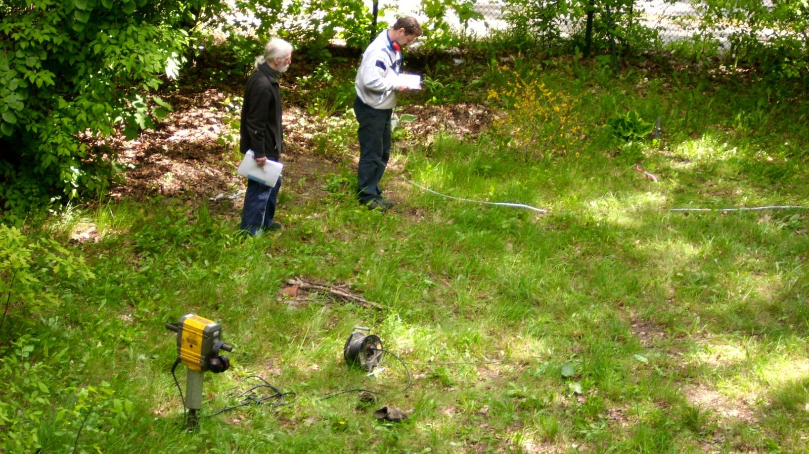
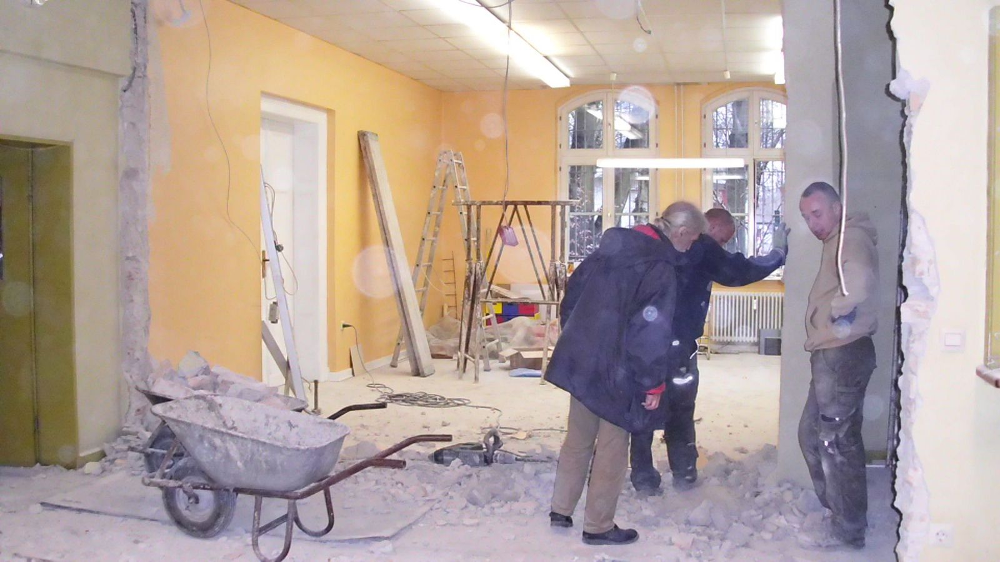
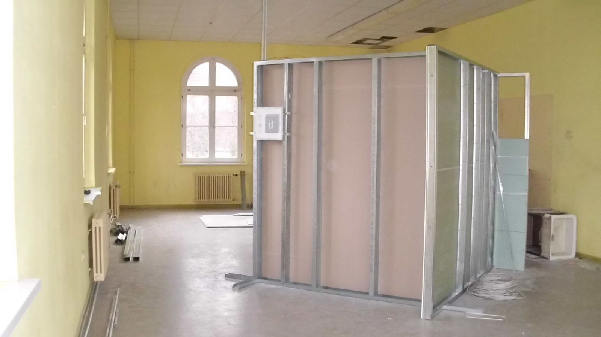
Ziegelmassivbau von 1893/94
- Gebäude
- nicht unterkellerter Ziegelmassivbau, erbaut 1893/94 – anfangs zwei-, später dreistöckig
- Treppenhäuser
- zwei (Aufgang 1 und 2), in jeder Etage über einen Flur verbunden
- Nutzfläche
- ca. 1.246 m² inklusive der Gemeinschaftsflächen
- Heizung
- Gaszentralheizung seit 2011, unter Weiterverwendung der vorhandenen Gliederheizkörper und Verteilleitungen
- Gemeinschaft
- instandgesetzte Gemeinschaftstoiletten im EG und 2. OG; im EG zusätzlich ein barrierefreies WC, eine einfache Dusche, Waschmaschinen und eine Gemeinschaftsküche
- Sanitär in Einheiten
- eigene Sanitärräume mit Warmwasser lassen Nutzer:innen je nach Bedarf selbst fachgerecht installieren
- Böden
- nahezu alle Räume mit Linoleum; individuelle Oberbodenbeläge bringen Nutzer:innen selbst ein
- Schallschutz
- Holz-Schallschutzfenster aus der Zeit der Einflugschneise des Flughafens Tegel (bis 8.11.2020) – nach damaligem Standard und nicht überall
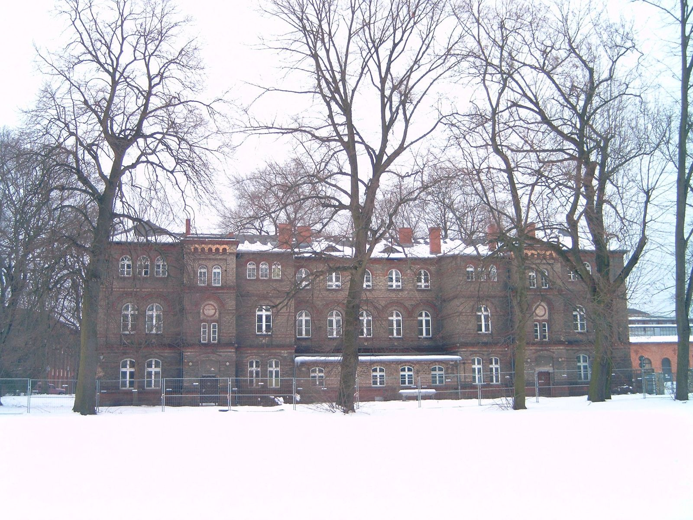
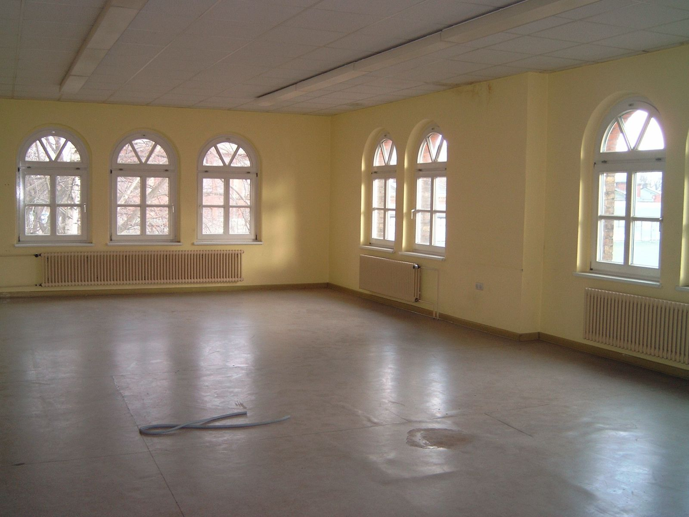
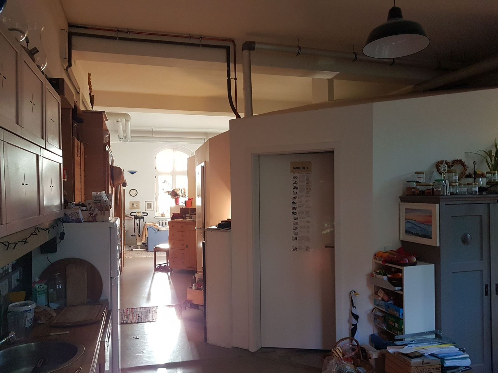
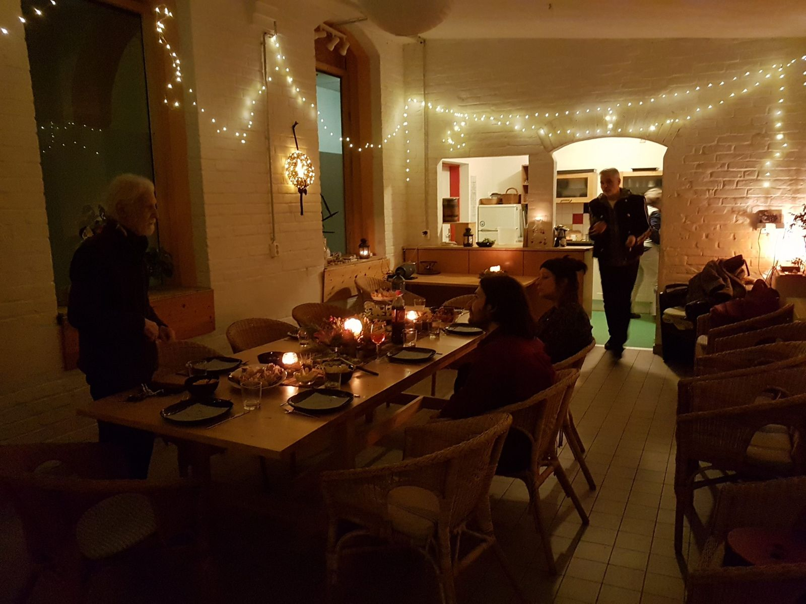
Arbeiten & Leben gemischt
Büros, Ateliers, Werkstätten und Studios für selbständig Schaffende unterschiedlicher Berufsfelder und Nationen – sowie Vereine und Verbände – haben sich sukzessive im Denkmalobjekt niedergelassen.
- Wohnen
- eine reine Wohnnutzung ist im Erbpacht-Projekt nicht möglich – nur in Teilbereichen und nur in Kombination mit einer Arbeitsstätte: kleinteilige Nutzungsmischung statt strikter Trennung von Arbeiten und Leben
- Öffentlichkeit
- der Veranstaltungsraum InselSalon und andere Nebenräume stehen auch der Öffentlichkeit zur Anmietung zur Verfügung – zur Unterstützung des Projekts und zum Netzwerken in kleineren und größeren Runden
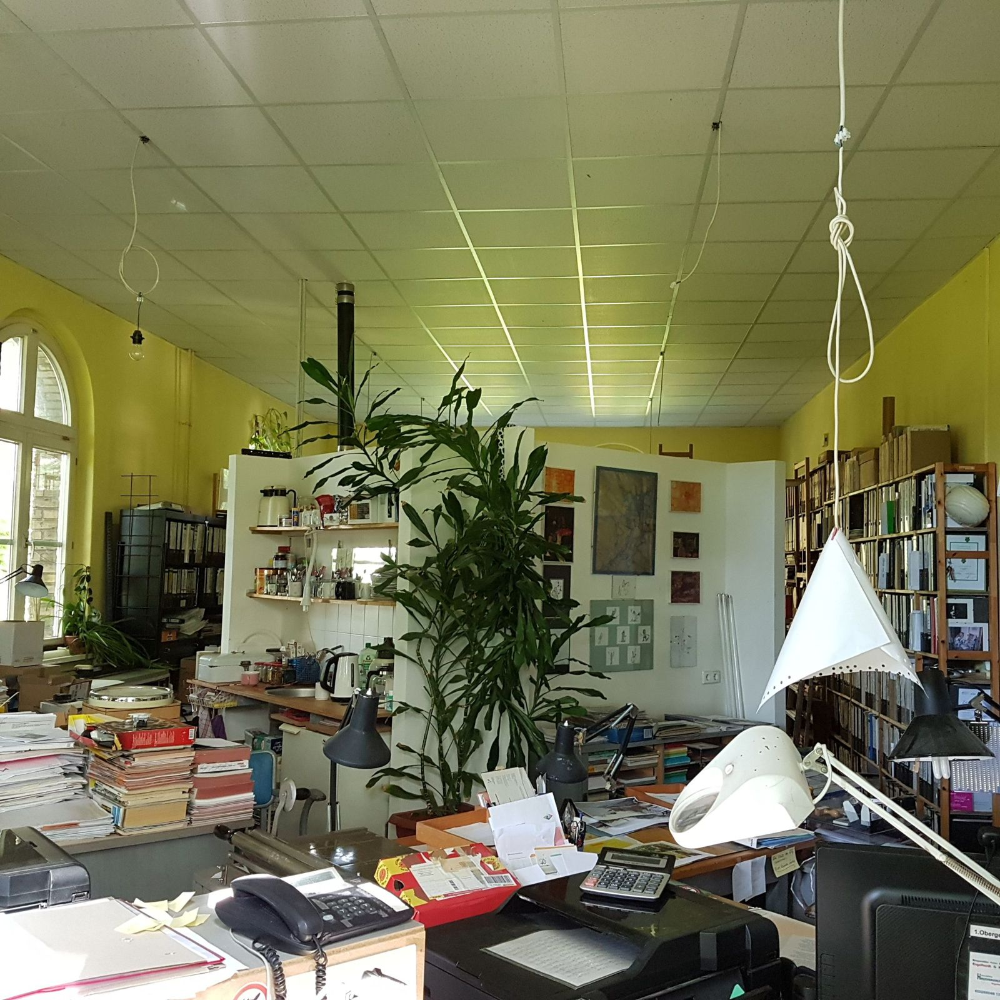
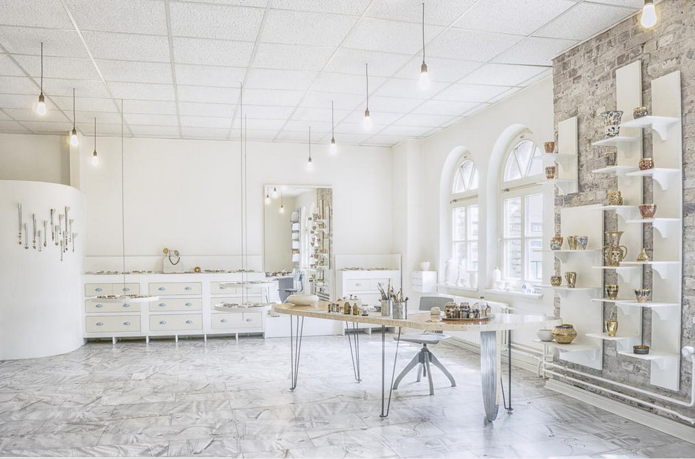
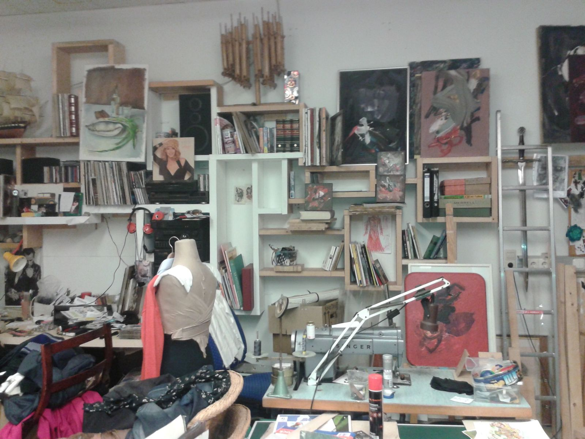
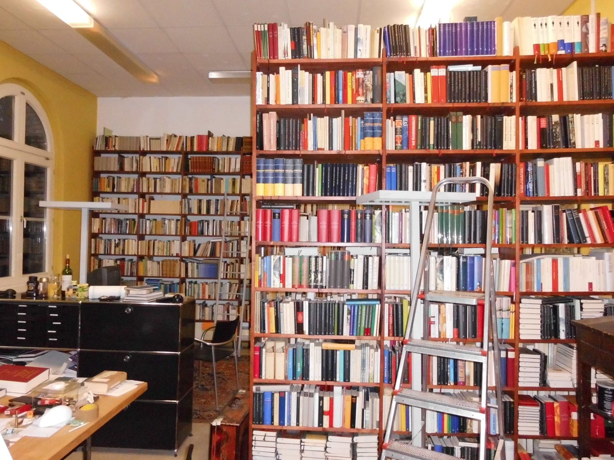
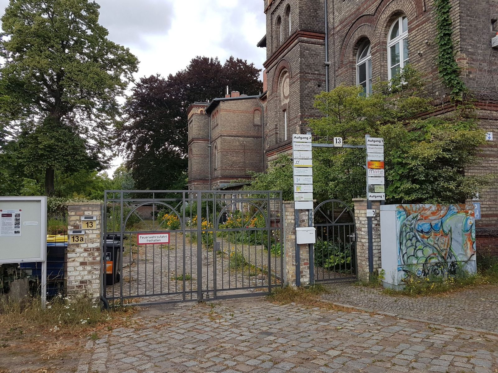
- Mitglied im gemeinnützigen Verein für gemeinwohlorientierte Immobilien- und Stadtentwicklung (Immovielien)
- EWSeG – die Genossenschaft der Stromrebellen
Schritt für Schritt seit 2010
2010 startete das Projekt mit der Nutzbarmachung und Umnutzung des ehemaligen Verwaltungsgebäudes. Der Bezug erfolgte sukzessive ab 2011 – anfangs unter mehr oder weniger provisorischen Bedingungen.
Vieles wurde zwischenzeitlich geleistet – organisatorisch und rechtlich, sowie bautechnisch an den Denkmalen, an Grund, Boden und Aufwuchs. Einzelmaßnahmen stehen weiterhin an: Pflege, Umgestaltungen und Verschönerungen der Gemeinschaftsflächen innen und außen. Freiwillig gestaltete künstlerische Attribute werden in ihrer Einmaligkeit erst nach und nach erkennbar.
Der schon lange geplante Einbau von Sonnenkollektoren zur Verbesserung möglicher Autarkie ist im Rahmen eines neuen Energiegesamtkonzepts eine große Herausforderung für unseren im Prinzip recycelten Altbaubestand.
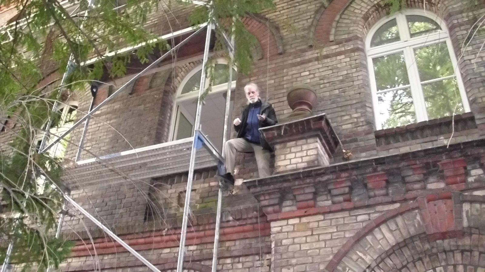
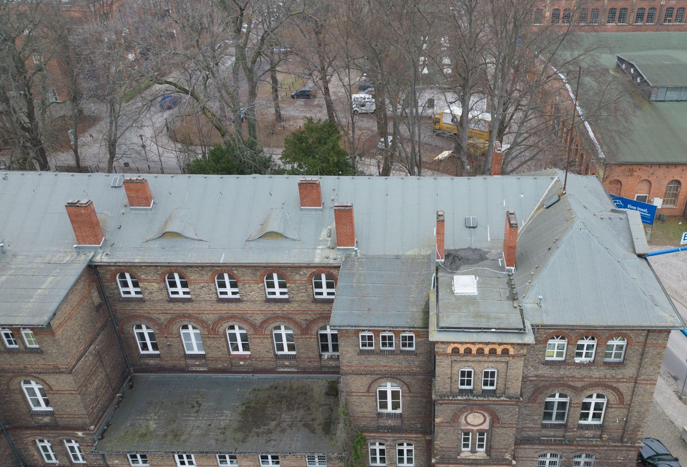
Der Veranstaltungsraum
InselSalon mieten
Rund 80 m² für Tagung, Seminar, Konzert, Ausstellung oder Ihre Feier – Park und Havel vor der Tür.